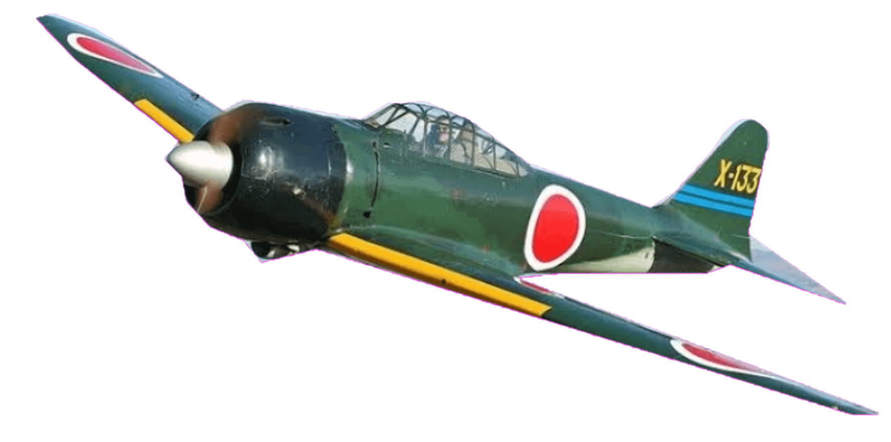
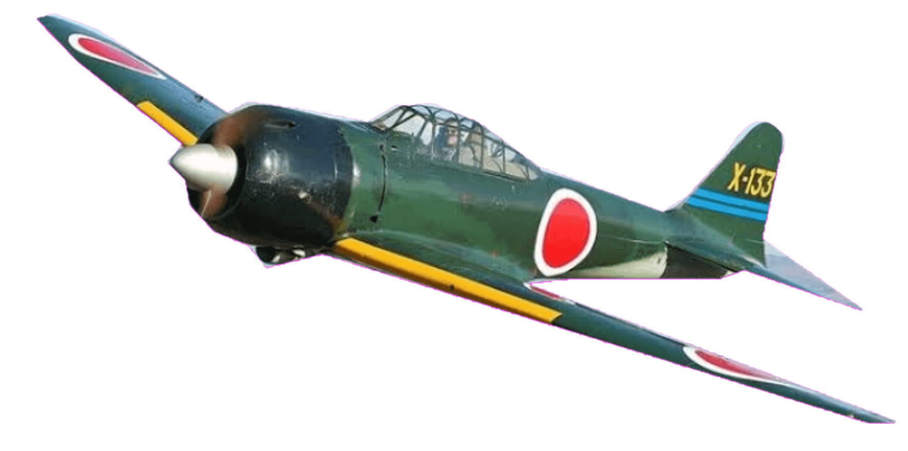

Film about our wreck diving

Your Journey to the wreck diving
About the East Tangat Wreck
The East Tangat Wreck is a sunken Japanese auxiliary subchaser from World War II, located near Tangat Island in Coron, Palawan. This shallow wreck lies at depths of 5 to 22 meters, making it an ideal spot for beginners and intermediate divers, as well as snorkelers seeking a glimpse of underwater history.
What Makes It Special
The East Tangat Wreck is one of the easiest and most accessible wreck dives in Coron. Its shallow depth allows for ample natural light, creating breathtaking views of the wreck's coral-encrusted structure. The vibrant marine life surrounding the wreck includes colorful fish, soft corals, and macro critters, making it a haven for underwater photography.
Highlights of Diving the East Tangat Wreck
- Depth: 5-22 meters
- Visibility: 10-20 meters
- Marine Life: Angelfish, clownfish, groupers, and various corals
- Accessibility: Suitable for snorkelers, beginners, and intermediate divers
- Unique Features: Shallow depth, coral growth, and historical significance


 


Dive Tips for the East Tangat Wreck
Due to its shallow depth and excellent visibility, the East Tangat Wreck is a perfect introduction to wreck diving. Beginners should consider diving with a guide for a safe and enjoyable experience. Snorkelers can also enjoy the upper portions of the wreck, which are teeming with marine life.
Planning Your Dive
The East Tangat Wreck is accessible through dive operators in Coron, who offer guided tours and snorkeling trips. Its close proximity to Tangat Island makes it a convenient addition to a day of island-hopping and exploring nearby reefs. The best time to dive is between November and May, when sea conditions are calm and visibility is at its peak.
Additional Information
The East Tangat Wreck offers a fantastic combination of history, marine biodiversity, and ease of access. Whether you're a first-time diver or a snorkeler looking for a unique experience, this wreck promises a memorable underwater adventure.